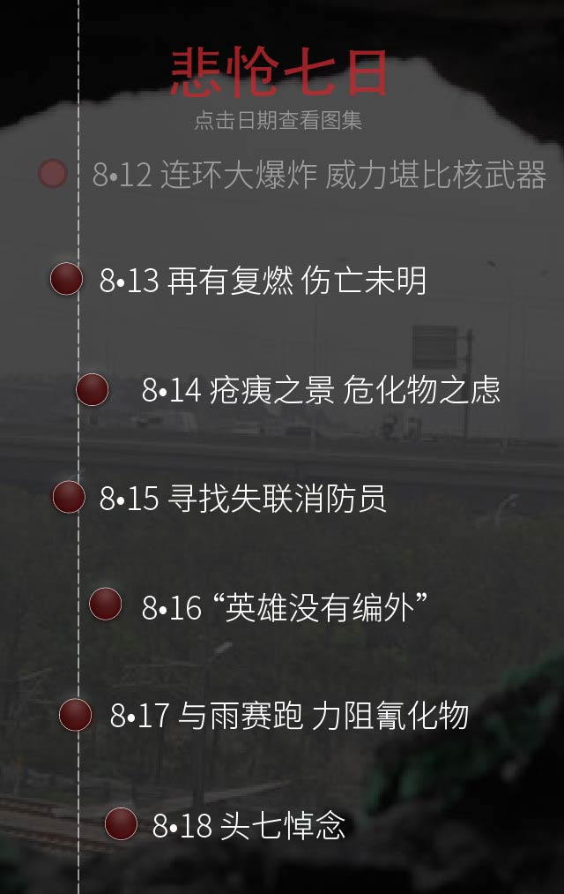

火灾
8月12日，22时50分，天津消防总队接到报警称，天津滨海新区港务集团瑞海物流危化品堆垛发生火灾，天津消防总队9个中队的35辆消防车和港务局码头3个专职消防队赶赴现场扑救。（CFP）
第一次爆炸

火灾随后引起周围多家工厂强烈的爆炸，中国地震台网速报显示，爆炸发生在8月12日23时34分6秒，近震震级约2.3级，相当于3吨TNT。（CFP）
第二次爆炸

30秒种后发生第二次爆炸，近震震级约2.9级，相当于21吨TNT——这已经达到一枚微型战术核武器的爆炸当量。（CFP）
